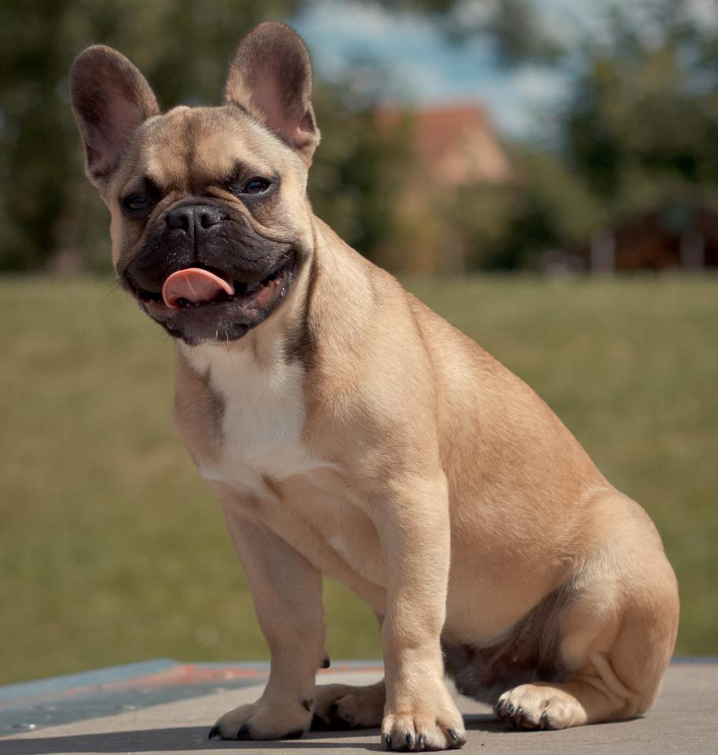

Некрупная, отличающаяся крупной, но короткой мордой, плоским раздвоенным носом, широкой раздвоенной верхней губой. Стоячие уши, широкие у основания и закругляющиеся сверху. Выступающие надбровные дуги отделены друг от друга глубокой бороздкой между глазами. Бороздка не должна продолжаться на лбу, как у английских бульдогов. Затылочный бугор слабо развит[1]. Могут иметь самый разнообразный окрас: тигровый, бело-тигровый, палевый, бело-палевый. Кремовый окрас не признаётся стандартами породы FCI (Европейской Кинологической Федерацией) и РКФ, но широко распространён в Америке. Типичная собака малого формата. Мощный пёс в маленьком обличье, пропорционально коренастый, короткошёрстный, с короткой мордой и плоской мочкой носа, стоячими ушами и коротким от природы хвостом. Должен иметь внешность собаки жизнерадостной, разумной, очень мускулистой, компактного строения и с надёжным костяком. Bec: 8—15 кг. Рост: сбалансированный с весом[1]. Собака-компаньон, собака для развлечения. Весёлый и подвижный, с крепкой психикой, любит детей, хорошо встречает гостей, но в случае опасности готов защищать хозяина и его семью. Может быть агрессивен к другим собакам и кошкам, но это зависит от темперамента индивидуальной особи.

Французские бульдоги относятся к некрупным породам собак. Как и любая другая порода, требуют сбалансированного питания. Могут иметь склонность к пищевым аллергиям и требуют тщательного подбора рациона как коммерческих, так и натуральных кормов. У французских бульдогов есть склонности к определённым проблемам со здоровьем, которых владельцы могут постараться избежать при надлежащем уходе.[13] Во-первых, у французских бульдогов нет сильной потребности в физических упражнениях[13], но им всё же требуются ежедневные прогулки. Поскольку французские бульдоги относятся к категории собак с «плоской мордой», следует избегать интенсивных упражнений, которые вызывают у животного тяжёлое дыхание. Это правило особенно важно соблюдать в жаркую погоду. Рекомендуется взвешивать собаку и наблюдать за изменениями во внешнем виде животного, чтобы вовремя заметить и решить возможную проблему ожирения. Французские бульдоги плохо переносят жару из-за брахицефального строения морды. При высокой температуре им требуются дополнительные средства охлаждения (кондиционер, мокрое полотенце; охлаждающая попона; достаточное количество воды). К холоду французские бульдоги тоже не приспособлены и нуждаются в тёплой одежде. Не предназначены для уличного или вольерного содержания. Французские бульдоги короткошёрстные, требуют ухода за шерстью только в периоды линьки. Следует следить за кожной складкой на морде, она должна содержаться в чистоте и сухости, чтобы избежать в ней скопления влаги и возникновения дерматита. Как и большинству собак, французским бульдогам необходимо время от времени мыться, но большую часть времени должно быть достаточно расчёсывания, чтобы масло для волос равномерно распределялось по шерсти и сохраняло естественный блеск.